Q01 · 17.5 / Types of Small-Scale Mutations 正式分類
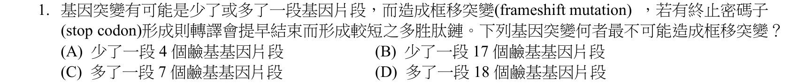
本地原卷PDF2 · 官方原答案PDF1（生物50題） · 已核對同年生物釋疑PDF4（未列本題）
官方採計：D 原答案：D
未列本輪取得的111年度生物釋疑PDF4；依同年答案，不宣稱沒有其他未取得公告
主分類：Ch17 Gene Expression: From Gene to Protein
17.5 / Types of Small-Scale Mutations
目錄行1085；條目起始印刷頁357；實際目錄 PDF39
主分類理由：17.5 / Types of Small-Scale Mutations：357–359頁以插入或缺失改變讀框解釋小尺度突變，直接對應四個片段長度。
次分類理由：無另列最小次條目；重看4、17、7、18及stop codon完整題文；核心是非3倍數造成移框，定位17.5小尺度突變。18保持框而非保證功能，Q1右緣修復後問號完整。
科學說明：官方D。18為3的倍數，在編碼區插入18鹼基通常保持下游讀框；4、17、7皆非3倍數。保持讀框不表示蛋白質功能正常；題幹泛稱基因片段，若在非編碼區則不能直接套用讀框推論。
來源涵蓋範圍：以本地Campbell實際目錄及列示正文作分類依據，原題限定與同年釋疑另存；不將正文小標冒充目錄條目。
教材正文：印刷357／PDF406、印刷358／PDF407、印刷359／PDF408
補充來源：本題未另列課本外來源
另行比較：一般基因變異或染色體缺失，是否足夠精確？
重看4、17、7、18及stop codon完整題文；核心是非3倍數造成移框，定位17.5小尺度突變。18保持框而非保證功能，Q1右緣修復後問號完整。
結論：證據確認，分類疑義已解決。完整覆核紀錄
Q02 · 11.3 / Small Molecules and Ions as Second Messengers 正式分類
本地原卷PDF2 · 官方原答案PDF1（生物50題） · 已核對同年生物釋疑PDF4（未列本題）
官方採計：B 原答案：B
未列本輪取得的111年度生物釋疑PDF4；依同年答案，不宣稱沒有其他未取得公告
主分類：Ch11 Cell Communication
11.3 / Small Molecules and Ions as Second Messengers
文字目錄漏and Ions；本輪核實實際PDF目錄完整標題，原文字目錄不改。 目錄行724；條目起始印刷頁223；實際目錄 PDF38
次分類：Ch11 Cell Communication
11.4 / Regulation of the Response
目錄行734；條目起始印刷頁226；實際目錄 PDF38
主分類理由：11.3 / Small Molecules and Ions as Second Messengers：223–225頁的cAMP、Ca²⁺及IP3等第二訊使，把上游刺激傳遞給多個下游分子。
次分類理由：11.4 / Regulation of the Response：226–227頁的訊號放大補足題幹酵素催化大量產物的機制。
科學說明：官方B。第二訊使是細胞內小分子或離子；Ca²⁺即使在IP3下游仍稱第二訊使，不依步驟改叫第三、第四級。酵素級聯也能放大訊號，並非所有放大都只靠第二訊使。
來源涵蓋範圍：以本地Campbell實際目錄及列示正文作分類依據，原題限定與同年釋疑另存；不將正文小標冒充目錄條目。
教材正文：印刷223／PDF272、印刷224／PDF273、印刷225／PDF274、印刷226／PDF275、印刷227／PDF276
補充來源：本題未另列課本外來源
另行比較：是否只歸訊號放大而忽略第二訊使種類？
重新比較四級選項及223–227頁，主小分子訊使、次放大調控；Ca²⁺下游級數不另改名，L0724按PDF補回and Ions。
結論：證據確認，分類疑義已解決。完整覆核紀錄
Q03 · 39.2 / A Survey of Plant Hormones 正式分類
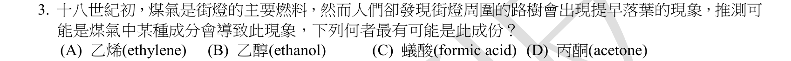
本地原卷PDF2 · 官方原答案PDF1（生物50題） · 已核對同年生物釋疑PDF4（未列本題）
官方採計：A 原答案：A
未列本輪取得的111年度生物釋疑PDF4；依同年答案，不宣稱沒有其他未取得公告
主分類：Ch39 Plant Responses to Internal and External Signals
39.2 / A Survey of Plant Hormones
目錄行2557；條目起始印刷頁847；實際目錄 PDF45
主分類理由：39.2 / A Survey of Plant Hormones：852–854頁在植物激素綜覽下直接列乙烯、街燈煤氣與葉片脫落。
次分類理由：無另列最小次條目；乙烯段同時支援煤氣與落葉，最小目錄是激素綜覽而非正文Ethylene小標；十八世紀與1800年代差異分存。
科學說明：官方A。乙烯促進離層形成，作用也受葉片生長素平衡影響。原題寫十八世紀初，本地教材852頁寫1800年代，且1901年辨認乙烯；年代差異照存，不回改原題。
來源涵蓋範圍：以本地Campbell實際目錄及列示正文作分類依據，原題限定與同年釋疑另存；不將正文小標冒充目錄條目。
教材正文：印刷852／PDF901、印刷853／PDF902、印刷854／PDF903
補充來源：本題未另列課本外來源
另行比較：是否歸一般脫落或把年代自動修正？
乙烯段同時支援煤氣與落葉，最小目錄是激素綜覽而非正文Ethylene小標；十八世紀與1800年代差異分存。
結論：證據確認，分類疑義已解決。完整覆核紀錄
Q04 · 33.1 / Sponges are basal animals that lack tissues 正式分類
本地原卷PDF2 · 官方原答案PDF1（生物50題） · 已核對同年生物釋疑PDF4（未列本題）
官方採計：C 原答案：C
未列本輪取得的111年度生物釋疑PDF4；依同年答案，不宣稱沒有其他未取得公告
主分類：Ch33 An Introduction to Invertebrates
33.1 / Sponges are basal animals that lack tissues
目錄行2093；條目起始印刷頁690；實際目錄 PDF44
主分類理由：33.1 / Sponges are basal animals that lack tissues：690–691頁的海綿概念本身沒有更小目錄子項，直接說明缺少真正組織。
次分類理由：無另列最小次條目；重新比對四選項與33.1，實際目錄沒有子目，概念本身已最小；有細胞分工與無真正組織可以並存。
科學說明：官方C。海綿有分化細胞但無真正組織與器官；其他選項動物具有組織。缺組織不等於缺細胞分工，不把海綿生活史或刺胞動物當主目。
來源涵蓋範圍：以本地Campbell實際目錄及列示正文作分類依據，原題限定與同年釋疑另存；不將正文小標冒充目錄條目。
教材正文：印刷690／PDF739、印刷691／PDF740
補充來源：本題未另列課本外來源
另行比較：是否須再下分海綿組織子目？
重新比對四選項與33.1，實際目錄沒有子目，概念本身已最小；有細胞分工與無真正組織可以並存。
結論：證據確認，分類疑義已解決。完整覆核紀錄
Q05 · 12.3 / The Cell Cycle Control System 正式分類
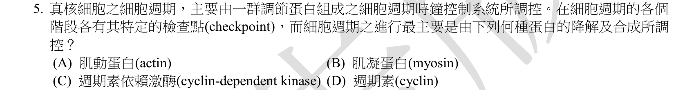
本地原卷PDF2 · 官方原答案PDF1（生物50題） · 已核對同年生物釋疑PDF4（未列本題）
官方採計：D 原答案：D
未列本輪取得的111年度生物釋疑PDF4；依同年答案，不宣稱沒有其他未取得公告
主分類：Ch12 The Cell Cycle
12.3 / The Cell Cycle Control System
目錄行789；條目起始印刷頁244；實際目錄 PDF38
主分類理由：12.3 / The Cell Cycle Control System：244–247頁的週期控制系統以cyclin濃度週期性變化調控Cdk。
次分類理由：無另列最小次條目；逐項比較合成降解的是cyclin；控制系統最小項已足，不另列肌動蛋白或細胞質分裂。
科學說明：官方D。週期素合成與降解使其量起伏；週期素依賴激酶的活性受結合週期素等方式調節，不可把Cdk活性變化等同其蛋白質量同步週期降解。肌動、肌凝蛋白不是題問的時鐘。
來源涵蓋範圍：以本地Campbell實際目錄及列示正文作分類依據，原題限定與同年釋疑另存；不將正文小標冒充目錄條目。
教材正文：印刷244／PDF293、印刷245／PDF294、印刷246／PDF295、印刷247／PDF296
補充來源：本題未另列課本外來源
另行比較：週期素依賴激酶與週期素是否混淆？
逐項比較合成降解的是cyclin；控制系統最小項已足，不另列肌動蛋白或細胞質分裂。
結論：證據確認，分類疑義已解決。完整覆核紀錄
Q06 · 6.5 / Mitochondria: Chemical Energy Conversion 正式分類
本地原卷PDF2 · 官方原答案PDF1（生物50題） · 已核對同年生物釋疑PDF4（未列本題）
官方採計：B 原答案：B
未列本輪取得的111年度生物釋疑PDF4；依同年答案，不宣稱沒有其他未取得公告
主分類：Ch06 A Tour of the Cell
6.5 / Mitochondria: Chemical Energy Conversion
目錄行365；條目起始印刷頁110；實際目錄 PDF36
主分類理由：6.5 / Mitochondria: Chemical Energy Conversion：109–110頁描述粒線體由外膜及摺成嵴的內膜包圍。
次分類理由：無另列最小次條目；對照內外膜圖與四胞器，粒線體項可直接決定B，不需為無關內膜系統另加章。
科學說明：官方B。雙層膜指兩個各自的磷脂雙層膜；內質網、高基氏體及細胞膜不是兩個包膜。不能把單一膜的兩個脂質葉層當成題問雙層膜。
來源涵蓋範圍：以本地Campbell實際目錄及列示正文作分類依據，原題限定與同年釋疑另存；不將正文小標冒充目錄條目。
教材正文：印刷109／PDF158、印刷110／PDF159
補充來源：本題未另列課本外來源
Q07 · 48.4 / Neurotransmitters 正式分類
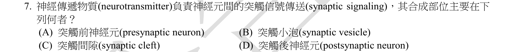
本地原卷PDF2 · 官方原答案PDF1（生物50題） · 已核對同年生物釋疑PDF4（未列本題）
官方採計：A 原答案：A
未列本輪取得的111年度生物釋疑PDF4；依同年答案，不宣稱沒有其他未取得公告
主分類：Ch48 Neurons, Synapses, and Signaling
48.4 / Neurotransmitters
目錄行3231；條目起始印刷頁1080；實際目錄 PDF48
主分類理由：48.4 / Neurotransmitters：1080–1082頁區分小分子與胜肽傳遞物質，配合1077–1078頁突觸前釋放。
次分類理由：無另列最小次條目；以神經傳遞物質類型及突觸圖回查，A涵蓋不同合成處；小泡是儲釋位置，未把所有類型簡化為同一小胞器。
科學說明：官方A。合成位置屬突觸前神經元；胜肽主要在胞體合成，小分子多在末梢由酵素生成。突觸小泡主要儲存與釋放，不能把所有傳遞物質概括為在小泡內合成或都以小泡儲存，NO等另有例外。
來源涵蓋範圍：以本地Campbell實際目錄及列示正文作分類依據，原題限定與同年釋疑另存；不將正文小標冒充目錄條目。
教材正文：印刷1077／PDF1126、印刷1078／PDF1127、印刷1080／PDF1129、印刷1081／PDF1130、印刷1082／PDF1131
補充來源：本題未另列課本外來源
另行比較：小泡合成、胞體合成及末梢合成是否區分？
以神經傳遞物質類型及突觸圖回查，A涵蓋不同合成處；小泡是儲釋位置，未把所有類型簡化為同一小胞器。
結論：證據確認，分類疑義已解決。完整覆核紀錄
Q08 · 44.2 / Forms of Nitrogenous Waste 正式分類
本地原卷PDF2 · 官方原答案PDF1（生物50題） · 已核對同年生物釋疑PDF4（未列本題）
官方採計：C 原答案：C
未列本輪取得的111年度生物釋疑PDF4；依同年答案，不宣稱沒有其他未取得公告
主分類：Ch44 Osmoregulation and Excretion
44.2 / Forms of Nitrogenous Waste
目錄行2957；條目起始印刷頁982；實際目錄 PDF47
次分類：Ch44 Osmoregulation and Excretion
44.2 / The Influence of Evolution and Environment on Nitrogenous Wastes
目錄行2960；條目起始印刷頁983；實際目錄 PDF47
主分類理由：44.2 / Forms of Nitrogenous Waste：982–983頁比較氨、尿素與尿酸的溶解度、毒性及能量成本。
次分類理由：44.2 / The Influence of Evolution and Environment on Nitrogenous Wastes：983頁補充陸生環境與有殼卵使不溶性排泄物有利。
科學說明：官方C。尿酸難溶，可用少量水排出；其生成成本較高，並非快速溶於水或毒性最大。節水與能量成本是取捨，不能以低毒性推論低合成成本。
來源涵蓋範圍：以本地Campbell實際目錄及列示正文作分類依據，原題限定與同年釋疑另存；不將正文小標冒充目錄條目。
教材正文：印刷982／PDF1031、印刷983／PDF1032
補充來源：本題未另列課本外來源
Q09 · 47.2 / Gastrulation 正式分類
本地原卷PDF2 · 官方原答案PDF1（生物50題） · 已核對同年生物釋疑PDF4（未列本題）
官方採計：B 原答案：B
未列本輪取得的111年度生物釋疑PDF4；依同年答案，不宣稱沒有其他未取得公告
主分類：Ch47 Animal Development
47.2 / Gastrulation
目錄行3144；條目起始印刷頁1049；實際目錄 PDF48
主分類理由：47.2 / Gastrulation：1049–1052頁原腸形成的細胞內移、原腸及胚孔直接對應發育階段。
次分類理由：無另列最小次條目；重看blastopore與各階段，原腸形成最小項直接支援B；不把神經胚、體腔當同義。
科學說明：官方B。胚孔在原腸形成時出現，不能與囊胚腔混同；囊胚形成、神經胚形成及體腔形成不是此開口出現的最佳階段。
來源涵蓋範圍：以本地Campbell實際目錄及列示正文作分類依據，原題限定與同年釋疑另存；不將正文小標冒充目錄條目。
教材正文：印刷1049／PDF1098、印刷1050／PDF1099、印刷1051／PDF1100、印刷1052／PDF1101
補充來源：本題未另列課本外來源
另行比較：胚孔與囊胚腔是否混淆？
重看blastopore與各階段，原腸形成最小項直接支援B；不把神經胚、體腔當同義。
結論：證據確認，分類疑義已解決。完整覆核紀錄
Q10 · 6.5 / Peroxisomes: Oxidation 正式分類
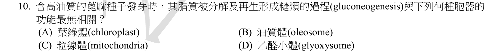
本地原卷PDF2 · 官方原答案PDF1（生物50題） · 已核對同年生物釋疑PDF4（未列本題）
官方採計：A 原答案：A
未列本輪取得的111年度生物釋疑PDF4；依同年答案，不宣稱沒有其他未取得公告
主分類：Ch06 A Tour of the Cell
6.5 / Peroxisomes: Oxidation
目錄行371；條目起始印刷頁112；實際目錄 PDF36
主分類理由：6.5 / Peroxisomes: Oxidation：112頁過氧化體最小目錄項下的乙醛酸循環體，直接涉及發芽油籽脂肪轉為糖。
次分類理由：無另列最小次條目；教材glyoxysome正文配合儲油萌發與油菜研究，只支援選項比較與相關胞器；保留物種與全文取得限制。
科學說明：官方A。油質體供應脂肪，乙醛酸循環體與粒線體及細胞質參與儲油動員和糖生成；葉綠體最無直接關聯。830–831頁補足萌發使用儲存養分；補充論文研究油菜，不冒稱蓖麻實驗，也不擴張為所有質體都絕不參與。
來源涵蓋範圍：教材支援分類原理，未直接涵蓋的專名與細節由同年釋疑／具名補充來源補足；實讀範圍與下載限制見來源紀錄。
教材正文：印刷112／PDF161、印刷830／PDF879、印刷831／PDF880
補充來源：S01
另行比較：葉綠體最無關是否誤寫成所有質體不參與？
教材glyoxysome正文配合儲油萌發與油菜研究，只支援選項比較與相關胞器；保留物種與全文取得限制。
結論：證據確認，分類疑義已解決。完整覆核紀錄
Q11 · 10.5 / Photorespiration: An Evolutionary Relic? 正式分類
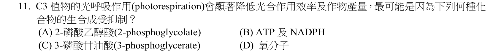
本地原卷PDF2 · 官方原答案PDF1（生物50題） · 已核對同年生物釋疑PDF4（未列本題）
官方採計：C 原答案：C
未列本輪取得的111年度生物釋疑PDF4；依同年答案，不宣稱沒有其他未取得公告
主分類：Ch10 Photosynthesis
10.5 / Photorespiration: An Evolutionary Relic?
目錄行673；條目起始印刷頁203；實際目錄 PDF37
主分類理由：10.5 / Photorespiration: An Evolutionary Relic?：203頁光呼吸項比較rubisco與氧、二氧化碳反應及碳損失。
次分類理由：無另列最小次條目；氧化與羧化路徑分開核對；C採計保留但氧化仍產生一個3-PGA，主光呼吸而非僅Calvin概述。
科學說明：官方C。氧競爭使RuBP羧化形成3-PGA的淨通量降低；氧化反應仍會產生一個3-PGA及二碳產物，不是3-PGA完全停止形成。2-phosphoglycolate是氧化分支產物，ATP／NADPH形成不是此題最直接受抑制步驟。
來源涵蓋範圍：以本地Campbell實際目錄及列示正文作分類依據，原題限定與同年釋疑另存；不將正文小標冒充目錄條目。
教材正文：印刷202／PDF251、印刷203／PDF252
補充來源：本題未另列課本外來源
另行比較：是否把3-PGA受抑解釋為完全不生成？
氧化與羧化路徑分開核對；C採計保留但氧化仍產生一個3-PGA，主光呼吸而非僅Calvin概述。
結論：證據確認，分類疑義已解決。完整覆核紀錄
Q12 · 16.1 / Building a Structural Model of DNA 正式分類
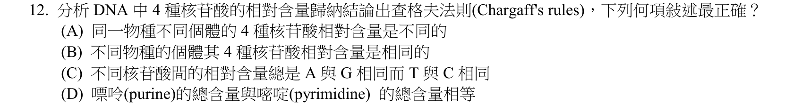
本地原卷PDF3 · 官方原答案PDF1（生物50題） · 已核對同年生物釋疑PDF4（未列本題）
官方採計：D 原答案：D
未列本輪取得的111年度生物釋疑PDF4；依同年答案，不宣稱沒有其他未取得公告
主分類：Ch16 The Molecular Basis of Inheritance
16.1 / Building a Structural Model of DNA
目錄行1000；條目起始印刷頁317；實際目錄 PDF39
主分類理由：16.1 / Building a Structural Model of DNA：317–319頁DNA結構模型用鹼基互補配對解釋Chargaff比例。
次分類理由：無另列最小次條目；四選項重新驗算A+G=T+C；以DNA結構模型最小項，明列雙股限定，不另加核酸化學章。
科學說明：官方D。在雙股DNA，A=T、G=C，所以A+G=T+C。不同物種比例可以不同，同物種通常近似；不能寫成A=G或把雙股規則無條件套用單股病毒DNA。
來源涵蓋範圍：以本地Campbell實際目錄及列示正文作分類依據，原題限定與同年釋疑另存；不將正文小標冒充目錄條目。
教材正文：印刷317／PDF366、印刷318／PDF367、印刷319／PDF368
補充來源：本題未另列課本外來源
另行比較：A=T、G=C是否錯套A=G？
四選項重新驗算A+G=T+C；以DNA結構模型最小項，明列雙股限定，不另加核酸化學章。
結論：證據確認，分類疑義已解決。完整覆核紀錄
Q13 · 16.3 / A chromosome consists of a DNA molecule packed together with proteins 正式分類
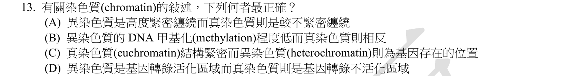
本地原卷PDF3 · 官方原答案PDF1（生物50題） · 已核對同年生物釋疑PDF4（未列本題）
官方採計：A 原答案：A
未列本輪取得的111年度生物釋疑PDF4；依同年答案，不宣稱沒有其他未取得公告
主分類：Ch16 The Molecular Basis of Inheritance
16.3 / A chromosome consists of a DNA molecule packed together with proteins
目錄行1022；條目起始印刷頁330；實際目錄 PDF39
主分類理由：16.3 / A chromosome consists of a DNA molecule packed together with proteins：330–332頁16.3概念沒有目錄子項，染色質包裝直接區別真、異染色質。
次分類理由：無另列最小次條目；A是包裝緊密度比較，16.3無子目可用；甲基化與轉錄是反例背景，不把18章加成主要。
科學說明：官方A。異染色質較緊密，真染色質通常較可接近且較易轉錄；選項B、D把一般關係反轉，C錯把基因只放在異染色質。甲基化與表達並非每個位置均可絕對二分。
來源涵蓋範圍：以本地Campbell實際目錄及列示正文作分類依據，原題限定與同年釋疑另存；不將正文小標冒充目錄條目。
教材正文：印刷330／PDF379、印刷331／PDF380、印刷332／PDF381
補充來源：本題未另列課本外來源
另行比較：是否用表達調節取代染色質結構？
A是包裝緊密度比較，16.3無子目可用；甲基化與轉錄是反例背景，不把18章加成主要。
結論：證據確認，分類疑義已解決。完整覆核紀錄
Q14 · 19.1 / Structure of Viruses 正式分類
本地原卷PDF3 · 官方原答案PDF1（生物50題） · 已核對同年生物釋疑PDF4（未列本題）
官方採計：A 原答案：A
未列本輪取得的111年度生物釋疑PDF4；依同年答案，不宣稱沒有其他未取得公告
主分類：Ch19 Viruses
19.1 / Structure of Viruses
目錄行1189；條目起始印刷頁399；實際目錄 PDF40
次分類：Ch19 Viruses
19.3 / Viral Diseases in Plants
目錄行1218；條目起始印刷頁412；實際目錄 PDF40
主分類理由：19.1 / Structure of Viruses：399–400頁病毒結構的核酸與蛋白殼是比較有無capsid的主軸。
次分類理由：19.3 / Viral Diseases in Plants：412頁植物病毒病與原生質絲傳播提供選項C的對照背景。
科學說明：官方A。ICTV確認類病毒為小型環狀單股RNA且沒有蛋白殼；本版412頁未提供完整類病毒專節，不虛構最小類病毒目錄。病毒可有DNA或RNA基因組，抗生素不作病毒普遍療法，類病毒也能在植物體內移動。
來源涵蓋範圍：教材支援分類原理，未直接涵蓋的專名與細節由同年釋疑／具名補充來源補足；實讀範圍與下載限制見來源紀錄。
教材正文：印刷399／PDF448、印刷400／PDF449、印刷408／PDF457、印刷412／PDF461、印刷1234／PDF1283
補充來源：S02
另行比較：類病毒是否有本版獨立目錄項？
原目錄無此項，主病毒結構、次植物病，ICTV補capsid及RNA內容；沒有杜撰小目或把病原概稱當病毒病原全同。
結論：證據確認，分類疑義已解決。完整覆核紀錄
Q15 · 9.4 / The Pathway of Electron Transport 正式分類
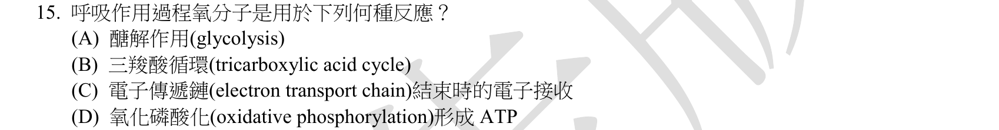
本地原卷PDF3 · 官方原答案PDF1（生物50題） · 已核對同年生物釋疑PDF4（未列本題）
官方採計：C 原答案：C
未列本輪取得的111年度生物釋疑PDF4；依同年答案，不宣稱沒有其他未取得公告
主分類：Ch09 Cellular Respiration and Fermentation
9.4 / The Pathway of Electron Transport
目錄行582；條目起始印刷頁174；實際目錄 PDF37
次分類：Ch09 Cellular Respiration and Fermentation
9.4 / Chemiosmosis: The Energy-Coupling Mechanism
目錄行585；條目起始印刷頁175；實際目錄 PDF37
主分類理由：9.4 / The Pathway of Electron Transport：174–175頁電子傳遞路徑明列氧作為末端電子接受者並形成水。
次分類理由：9.4 / Chemiosmosis: The Energy-Coupling Mechanism：175–176頁化學滲透區分電子傳遞與質子驅動ATP生成。
科學說明：官方C。氧直接接收電子，維持有氧電子傳遞；ATP合成酶使用質子動力，不能將氧直接參與的反應改答ATP形成。糖解與TCA不直接以氧為該步反應物。
來源涵蓋範圍：以本地Campbell實際目錄及列示正文作分類依據，原題限定與同年釋疑另存；不將正文小標冒充目錄條目。
教材正文：印刷174／PDF223、印刷175／PDF224、印刷176／PDF225
補充來源：本題未另列課本外來源
另行比較：氧在電子末端接收與ATP生成是否直接等同？
C與D分別對應電子傳遞及化學滲透，最小主次目照存；氧的直接受電子角色決定C。
結論：證據確認，分類疑義已解決。完整覆核紀錄
Q16 · 38.2 / Mechanisms That Prevent Self-Fertilization 正式分類
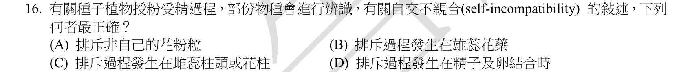
本地原卷PDF3 · 官方原答案PDF1（生物50題） · 已核對同年生物釋疑PDF4（未列本題）
官方採計：C 原答案：C
未列本輪取得的111年度生物釋疑PDF4；依同年答案，不宣稱沒有其他未取得公告
主分類：Ch38 Angiosperm Reproduction and Biotechnology
38.2 / Mechanisms That Prevent Self-Fertilization
目錄行2514；條目起始印刷頁834；實際目錄 PDF45
主分類理由：38.2 / Mechanisms That Prevent Self-Fertilization：834–835頁防止自體受精機制中的自交不親合，說明柱頭或花柱阻擋花粉。
次分類理由：無另列最小次條目；重看柱頭／花柱選項C及834頁，屬防止自體受精的機制，沒有把花藥或自家花粉排斥時機混合。
科學說明：官方C。自交不親合是辨識不相容花粉並抑制萌發或花粉管生長，通常發生在柱頭／花柱。不是花藥排斥，也不是等到精卵結合才開始；共享不相容等位型也可能限制不同植株間授粉。
來源涵蓋範圍：以本地Campbell實際目錄及列示正文作分類依據，原題限定與同年釋疑另存；不將正文小標冒充目錄條目。
教材正文：印刷834／PDF883、印刷835／PDF884
補充來源：本題未另列課本外來源
另行比較：自交不親合是否直到精卵融合才排斥？
重看柱頭／花柱選項C及834頁，屬防止自體受精的機制，沒有把花藥或自家花粉排斥時機混合。
結論：證據確認，分類疑義已解決。完整覆核紀錄
Q17 · 12.2 / Cytokinesis: A Closer Look 正式分類
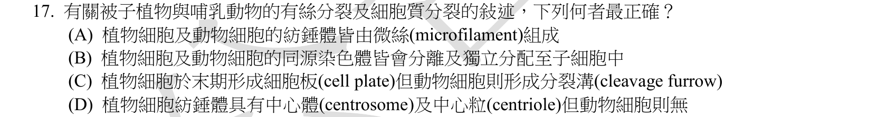
本地原卷PDF3 · 官方原答案PDF1（生物50題） · 已核對同年生物釋疑PDF4（未列本題）
官方採計：C 原答案：C
未列本輪取得的111年度生物釋疑PDF4；依同年答案，不宣稱沒有其他未取得公告
主分類：Ch12 The Cell Cycle
12.2 / Cytokinesis: A Closer Look
目錄行776；條目起始印刷頁241；實際目錄 PDF38
次分類：Ch12 The Cell Cycle
12.2 / The Mitotic Spindle: A Closer Look
目錄行773；條目起始印刷頁240；實際目錄 PDF38
主分類理由：12.2 / Cytokinesis: A Closer Look：241–242頁細胞質分裂直接比較植物細胞板與動物分裂溝。
次分類理由：12.2 / The Mitotic Spindle: A Closer Look：240頁紡錘體微管與染色單體分離補足其餘選項判斷。
科學說明：官方C。植物形成細胞板，動物以收縮環形成分裂溝。紡錘體以微管為主，有絲分裂分離姊妹染色單體，非同源染色體獨立分配；植物／動物中心粒敘述亦反置。
來源涵蓋範圍：以本地Campbell實際目錄及列示正文作分類依據，原題限定與同年釋疑另存；不將正文小標冒充目錄條目。
教材正文：印刷238／PDF287、印刷239／PDF288、印刷240／PDF289、印刷241／PDF290、印刷242／PDF291
補充來源：本題未另列課本外來源
另行比較：有絲分裂與減數分裂、微絲與微管是否混用？
C為細胞板與分裂溝，次紡錘體專處理其他選項，維持同章兩最小目而章級不重計。
結論：證據確認，分類疑義已解決。完整覆核紀錄
Q18 · 10.3 / A Comparison of Chemiosmosis in Chloroplasts and Mitochondria 正式分類
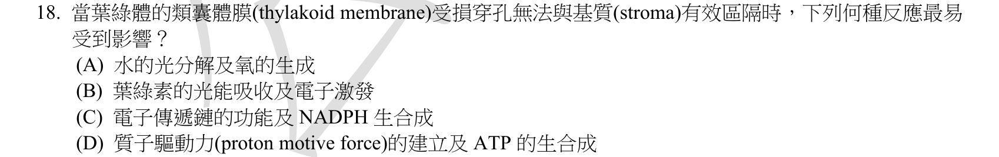
本地原卷PDF3 · 官方原答案PDF1（生物50題） · 已核對同年生物釋疑PDF4（未列本題）
官方採計：D 原答案：D
未列本輪取得的111年度生物釋疑PDF4；依同年答案，不宣稱沒有其他未取得公告
主分類：Ch10 Photosynthesis
10.3 / A Comparison of Chemiosmosis in Chloroplasts and Mitochondria
目錄行662；條目起始印刷頁199；實際目錄 PDF37
主分類理由：10.3 / A Comparison of Chemiosmosis in Chloroplasts and Mitochondria：199–201頁葉綠體與粒線體化學滲透比較，說明膜區隔維持質子梯度。
次分類理由：無另列最小次條目；區隔受損最直接破壞質子動力及ATP合成；化學滲透比較正確，不以光吸收小目泛代。
科學說明：官方D。類囊體破孔首先使質子動力難以建立、ATP合成減少；吸光及電子激發未必立即消失，不能將膜破孔直接等同所有光反應同步完全停擺。
來源涵蓋範圍：以本地Campbell實際目錄及列示正文作分類依據，原題限定與同年釋疑另存；不將正文小標冒充目錄條目。
教材正文：印刷199／PDF248、印刷200／PDF249、印刷201／PDF250
補充來源：本題未另列課本外來源
另行比較：膜破孔是否等於葉綠素不能激發？
區隔受損最直接破壞質子動力及ATP合成；化學滲透比較正確，不以光吸收小目泛代。
結論：證據確認，分類疑義已解決。完整覆核紀錄
Q19 · 39.2 / A Survey of Plant Hormones 正式分類
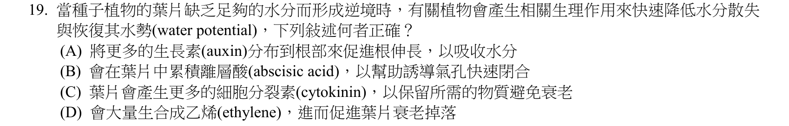
本地原卷PDF3 · 官方原答案PDF1（生物50題） · 已核對同年生物釋疑PDF4（未列本題）
官方採計：B 原答案：B
未列本輪取得的111年度生物釋疑PDF4；依同年答案，不宣稱沒有其他未取得公告
主分類：Ch39 Plant Responses to Internal and External Signals
39.2 / A Survey of Plant Hormones
目錄行2557；條目起始印刷頁847；實際目錄 PDF45
次分類：Ch36 Resource Acquisition and Transport in Vascular Plants
36.4 / Stimuli for Stomatal Opening and Closing
目錄行2397；條目起始印刷頁798；實際目錄 PDF45
主分類理由：39.2 / A Survey of Plant Hormones：852頁ABA乾旱耐受段直接說明缺水時累積並迅速關閉氣孔。
次分類理由：36.4 / Stimuli for Stomatal Opening and Closing：798頁氣孔開閉刺激補足葉片水分調節機制。
科學說明：官方B。ABA訊號引起保衛細胞離子及水分流失、膨壓下降，降低散水。伸根、抗衰老或落葉不是題幹要求的快速第一反應；離層酸之名不表示其主要功能就是落葉。
來源涵蓋範圍：以本地Campbell實際目錄及列示正文作分類依據，原題限定與同年釋疑另存；不將正文小標冒充目錄條目。
教材正文：印刷797／PDF846、印刷798／PDF847、印刷852／PDF901
補充來源：本題未另列課本外來源
另行比較：ABA與乙烯名稱或慢性落葉是否混淆？
題文強調快速降低散水，852與798頁共同確認B；激素綜覽主、氣孔刺激次。
結論：證據確認，分類疑義已解決。完整覆核紀錄
Q20 · 37.3 / Fungi and Plant Nutrition 正式分類
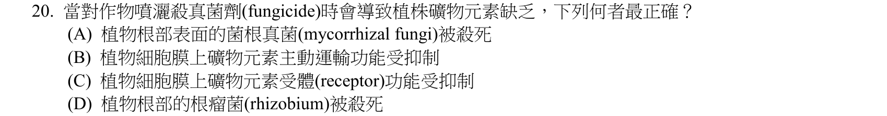
本地原卷PDF4 · 官方原答案PDF1（生物50題） · 已核對同年生物釋疑PDF4（未列本題）
官方採計：A 原答案：A
未列本輪取得的111年度生物釋疑PDF4；依同年答案，不宣稱沒有其他未取得公告
主分類：Ch37 Soil and Plant Nutrition
37.3 / Fungi and Plant Nutrition
目錄行2466；條目起始印刷頁817；實際目錄 PDF45
主分類理由：37.3 / Fungi and Plant Nutrition：817–818頁真菌與植物營養記述菌根擴大吸收並供應磷等礦物。
次分類理由：無另列最小次條目；回看fungicide與rhizobium，菌根礦物供應直接對應A；保留根表面簡化，不另分類到固氮。
科學說明：官方A。殺菌劑傷害菌根共生，可能使養分獲取下降；根瘤菌是細菌，不是殺真菌作用的最佳對象。菌根型態可在根內或根外，題文根部表面是簡化，不把所有菌根限制在外表。
來源涵蓋範圍：以本地Campbell實際目錄及列示正文作分類依據，原題限定與同年釋疑另存；不將正文小標冒充目錄條目。
教材正文：印刷817／PDF866、印刷818／PDF867
補充來源：本題未另列課本外來源
另行比較：是否將菌根與根瘤菌都視為真菌？
回看fungicide與rhizobium，菌根礦物供應直接對應A；保留根表面簡化，不另分類到固氮。
結論：證據確認，分類疑義已解決。完整覆核紀錄
Q21 · 15.5 / Inheritance of Organelle Genes 正式分類
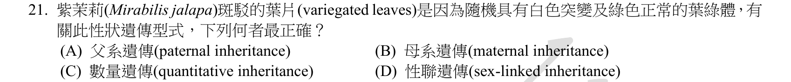
本地原卷PDF4 · 官方原答案PDF1（生物50題） · 已核對同年生物釋疑PDF4（未列本題）
官方採計：B 原答案：B
未列本輪取得的111年度生物釋疑PDF4；依同年答案，不宣稱沒有其他未取得公告
主分類：Ch15 The Chromosomal Basis of Inheritance
15.5 / Inheritance of Organelle Genes
目錄行984；條目起始印刷頁311；實際目錄 PDF39
主分類理由：15.5 / Inheritance of Organelle Genes：311–312頁胞器基因遺傳直接以斑葉與母本決定後代色型說明非孟德爾遺傳。
次分類理由：無另列最小次條目；斑葉與卵細胞質來源為主軸，15.5胞器遺傳直接支持B，不用X聯章目。
科學說明：官方B。紫茉莉葉綠體隨卵細胞細胞質傳給後代，屬母系胞器遺傳，不是性聯遺傳或數量性狀。教材說多數植物，不能擴張成所有植物均只有母系葉綠體。
來源涵蓋範圍：以本地Campbell實際目錄及列示正文作分類依據，原題限定與同年釋疑另存；不將正文小標冒充目錄條目。
教材正文：印刷311／PDF360、印刷312／PDF361
補充來源：本題未另列課本外來源
Q22 · 6.7 / Cell Junctions 正式分類
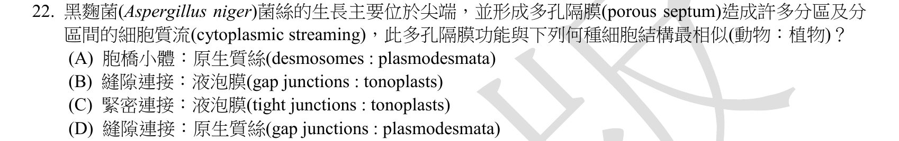
本地原卷PDF4 · 官方原答案PDF1（生物50題） · 已核對同年生物釋疑PDF4（未列本題）
官方採計：D 原答案：D
未列本輪取得的111年度生物釋疑PDF4；依同年答案，不宣稱沒有其他未取得公告
主分類：Ch06 A Tour of the Cell
6.7 / Cell Junctions
目錄行394；條目起始印刷頁119；實際目錄 PDF36
次分類：Ch31 Fungi
31.1 / Body Structure
目錄行1969；條目起始印刷頁655；實際目錄 PDF43
主分類理由：6.7 / Cell Junctions：119–120頁細胞連接比較動物縫隙連接與植物原生質絲的細胞間通路。
次分類理由：31.1 / Body Structure：655–656頁真菌菌絲體與隔膜孔說明題幹中的連通結構。
科學說明：官方D。兩者均可提供細胞間連通，與菌絲隔膜孔在功能上相似；不代表三種孔道同源、孔徑相同或通過物質完全一樣。胞橋小體偏附著，緊密連接偏封閉，液泡膜非細胞間橋。
來源涵蓋範圍：以本地Campbell實際目錄及列示正文作分類依據，原題限定與同年釋疑另存；不將正文小標冒充目錄條目。
教材正文：印刷119／PDF168、印刷120／PDF169、印刷655／PDF704、印刷656／PDF705
補充來源：本題未另列課本外來源
另行比較：隔膜孔是否與兩種連接完全相同？
D只是連通功能最相似；真菌Body Structure次目保存孔與菌絲情境，不宣稱結構同源。
結論：證據確認，分類疑義已解決。完整覆核紀錄
Q23 · 36.2 / Short-Distance Transport of Solutes Across Plasma Membranes 正式分類
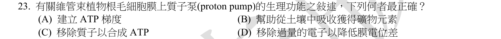
本地原卷PDF4 · 官方原答案PDF1（生物50題） · 已核對同年生物釋疑PDF4（未列本題）
官方採計：B 原答案：B
未列本輪取得的111年度生物釋疑PDF4；依同年答案，不宣稱沒有其他未取得公告
主分類：Ch36 Resource Acquisition and Transport in Vascular Plants
36.2 / Short-Distance Transport of Solutes Across Plasma Membranes
目錄行2362；條目起始印刷頁788；實際目錄 PDF45
主分類理由：36.2 / Short-Distance Transport of Solutes Across Plasma Membranes：788–789頁跨細胞膜短距離溶質輸送直接描寫根H+泵與礦物離子吸收。
次分類理由：無另列最小次條目；根部H+ATPase消耗ATP建電化學梯度，B礦物吸收成立；使用植物溶質運輸專目而非泛膜章。
科學說明：官方B。質子泵耗ATP建立H+電化學梯度，可驅動共運輸並影響膜電位。建立的是電化學梯度，不是ATP濃度梯度；也不是去除過量電子來減少膜電位。
來源涵蓋範圍：以本地Campbell實際目錄及列示正文作分類依據，原題限定與同年釋疑另存；不將正文小標冒充目錄條目。
教材正文：印刷788／PDF837、印刷789／PDF838
補充來源：本題未另列課本外來源
另行比較：質子泵是否產生ATP而非消耗ATP？
根部H+ATPase消耗ATP建電化學梯度，B礦物吸收成立；使用植物溶質運輸專目而非泛膜章。
結論：證據確認，分類疑義已解決。完整覆核紀錄
Q24 · 36.5 / Bulk Flow by Positive Pressure: The Mechanism of Translocation in Angiosperms 正式分類
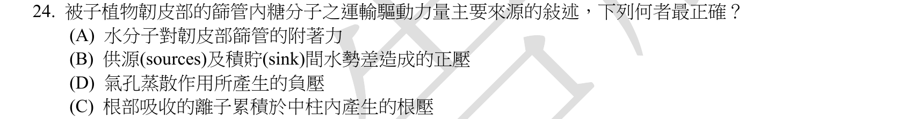
本地原卷PDF4 · 官方原答案PDF1（生物50題） · 已核對同年生物釋疑PDF4（未列本題）
官方採計：B 原答案：B
未列本輪取得的111年度生物釋疑PDF4；依同年答案，不宣稱沒有其他未取得公告
主分類：Ch36 Resource Acquisition and Transport in Vascular Plants
36.5 / Bulk Flow by Positive Pressure: The Mechanism of Translocation in Angiosperms
目錄行2413；條目起始印刷頁800；實際目錄 PDF45
次分類：Ch36 Resource Acquisition and Transport in Vascular Plants
36.5 / Movement from Sugar Sources to Sugar Sinks
目錄行2410；條目起始印刷頁799；實際目錄 PDF45
主分類理由：36.5 / Bulk Flow by Positive Pressure: The Mechanism of Translocation in Angiosperms：800–801頁被子植物正壓大量流直接解釋篩管運輸驅動力。
次分類理由：36.5 / Movement from Sugar Sources to Sugar Sinks：799–800頁糖源與糖庫的裝載／卸載設定壓力差的方向。
科學說明：官方B。糖裝載降低滲透勢，水進入提高源端膨壓，壓力差推動篩管汁液。原卷順序A、B、D、C照存；木質部負壓、根壓及單純附著力均非篩管主要機制。
來源涵蓋範圍：以本地Campbell實際目錄及列示正文作分類依據，原題限定與同年釋疑另存；不將正文小標冒充目錄條目。
教材正文：印刷799／PDF848、印刷800／PDF849、印刷801／PDF850
補充來源：本題未另列課本外來源
另行比較：正壓大量流是否與木質部負壓混淆？
原圖A B D C順序再次核對，主正壓運輸、次糖源糖庫；明確保留原選項次序與B。
結論：證據確認，分類疑義已解決。完整覆核紀錄
Q25 · 29.1 / The Origin and Diversification of Plants 正式分類
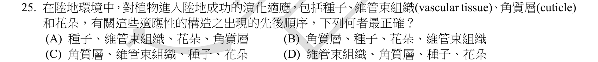
本地原卷PDF4 · 官方原答案PDF1（生物50題） · 已核對同年生物釋疑PDF4（未列本題）
官方採計：C 原答案：C
未列本輪取得的111年度生物釋疑PDF4；依同年答案，不宣稱沒有其他未取得公告
主分類：Ch29 Plant Diversity I: How Plants Colonized Land
29.1 / The Origin and Diversification of Plants
目錄行1870；條目起始印刷頁621；實際目錄 PDF43
次分類：Ch29 Plant Diversity I: How Plants Colonized Land
29.3 / Origins and Traits of Vascular Plants
目錄行1890；條目起始印刷頁629；實際目錄 PDF43
次分類：Ch30 Plant Diversity II: The Evolution of Seed Plants
30.1 / The Evolutionary Advantage of Seeds
目錄行1919；條目起始印刷頁639；實際目錄 PDF43
次分類：Ch30 Plant Diversity II: The Evolution of Seed Plants
30.3 / Characteristics of Angiosperms
目錄行1939；條目起始印刷頁644；實際目錄 PDF43
主分類理由：29.1 / The Origin and Diversification of Plants：621–623頁植物起源分化與大支系樹提供四特徵演化順序的主框架。
次分類理由：29.3 / Origins and Traits of Vascular Plants：629–630頁維管束植物起源定位導管系統；30.1 / The Evolutionary Advantage of Seeds：639頁種子演化優勢定位種子支系；30.3 / Characteristics of Angiosperms：644頁被子植物特徵定位花朵。
科學說明：官方C，角質層→維管束→種子→花。順序是依主要支系的共同衍徵作教學比較，不表示每種現存植物都完整持有四者或彼此在單一祖先同時起源。
來源涵蓋範圍：以本地Campbell實際目錄及列示正文作分類依據，原題限定與同年釋疑另存；不將正文小標冒充目錄條目。
教材正文：印刷621／PDF670、印刷622／PDF671、印刷623／PDF672、印刷629／PDF678、印刷630／PDF679、印刷639／PDF688、印刷643／PDF692、印刷644／PDF693
補充來源：本題未另列課本外來源
Q26 · 36.3 / Bulk Flow Transport via the Xylem 正式分類
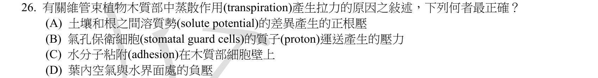
本地原卷PDF4 · 官方原答案PDF1（生物50題） · 已核對同年生物釋疑PDF4（未列本題）
官方採計：D 原答案：D
未列本輪取得的111年度生物釋疑PDF4；依同年答案，不宣稱沒有其他未取得公告
主分類：Ch36 Resource Acquisition and Transport in Vascular Plants
36.3 / Bulk Flow Transport via the Xylem
目錄行2381；條目起始印刷頁792；實際目錄 PDF45
主分類理由：36.3 / Bulk Flow Transport via the Xylem：792–795頁木質部大量流以葉內蒸發界面表面張力與負壓解釋蒸散拉力。
次分類理由：無另列最小次條目；葉內界面負壓是D，內聚／附著傳遞支持水柱；木質部大量流最小項足以處理所有選項。
科學說明：官方D。葉肉細胞壁水—空氣界面彎曲造成張力，水分子內聚力沿水柱傳遞。附著力助穩定水柱，但不是拉力最初來源；正根壓和保衛細胞運氫不等於此負壓。
來源涵蓋範圍：以本地Campbell實際目錄及列示正文作分類依據，原題限定與同年釋疑另存；不將正文小標冒充目錄條目。
教材正文：印刷792／PDF841、印刷793／PDF842、印刷794／PDF843、印刷795／PDF844
補充來源：本題未另列課本外來源
另行比較：水柱附著力能否當最初拉力來源？
葉內界面負壓是D，內聚／附著傳遞支持水柱；木質部大量流最小項足以處理所有選項。
結論：證據確認，分類疑義已解決。完整覆核紀錄
Q27 · 25.4 / Adaptive Radiations 正式分類
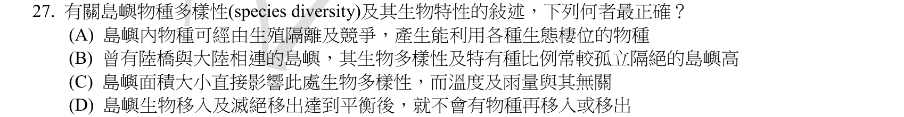
本地原卷PDF4 · 官方原答案PDF1（生物50題） · 已核對同年生物釋疑PDF4（未列本題）
官方採計：A 原答案：A
未列本輪取得的111年度生物釋疑PDF4；依同年答案，不宣稱沒有其他未取得公告
主分類：Ch25 The History of Life on Earth
25.4 / Adaptive Radiations
目錄行1589；條目起始印刷頁542；實際目錄 PDF41
次分類：Ch54 Community Ecology
54.4 / Island Equilibrium Model
目錄行3649；條目起始印刷頁1232；實際目錄 PDF50
主分類理由：25.4 / Adaptive Radiations：542–543頁適應輻射說明隔離後物種利用不同棲位而分化，直接符合A。
次分類理由：54.4 / Island Equilibrium Model：1232–1233頁島嶼平衡模型檢查面積、隔離及移入滅絕的動態平衡。
科學說明：官方A。生殖隔離與不同生態位可促進分化；多樣性與特有種比例不同，不宜只按是否有陸橋排序。面積以外氣候等仍重要，達到平衡不表示移入與滅絕停止。
來源涵蓋範圍：以本地Campbell實際目錄及列示正文作分類依據，原題限定與同年釋疑另存；不將正文小標冒充目錄條目。
教材正文：印刷542／PDF591、印刷543／PDF592、印刷1232／PDF1281、印刷1233／PDF1282
補充來源：本題未另列課本外來源
另行比較：適應輻射與島嶼平衡是同一機制嗎？
A由隔離及生態位分化支持，D由動態平衡反證；25與54章分主次，未把物種數與特有種混同。
結論：證據確認，分類疑義已解決。完整覆核紀錄
Q28 · 39.1 / Response 正式分類
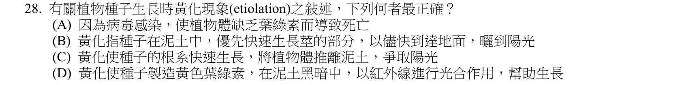
本地原卷PDF4 · 官方原答案PDF1（生物50題） · 已核對同年生物釋疑PDF4（未列本題）
官方採計：B 原答案：B
未列本輪取得的111年度生物釋疑PDF4；依同年答案，不宣稱沒有其他未取得公告
主分類：Ch39 Plant Responses to Internal and External Signals
39.1 / Response
目錄行2547；條目起始印刷頁845；實際目錄 PDF45
次分類：Ch38 Angiosperm Reproduction and Biotechnology
38.1 / Sporophyte Development from Seed to Mature Plant
目錄行2498；條目起始印刷頁829；實際目錄 PDF45
主分類理由：39.1 / Response：843–845頁黃化及去黃化反應描述地下嫩芽優先伸莖、葉未展開與缺乏綠色。
次分類理由：38.1 / Sporophyte Development from Seed to Mature Plant：830–831頁萌發後幼苗利用儲藏物提供種子情境。
科學說明：官方B。此處種子生長實指萌發後幼苗，暗中伸莖利於到地面。不是病毒病、不是根把苗推上土面，也不會靠黃色葉綠素在黑暗中使用紅外線行光合作用。
來源涵蓋範圍：以本地Campbell實際目錄及列示正文作分類依據，原題限定與同年釋疑另存；不將正文小標冒充目錄條目。
教材正文：印刷830／PDF879、印刷831／PDF880、印刷843／PDF892、印刷844／PDF893、印刷845／PDF894
補充來源：本題未另列課本外來源
另行比較：黃化是否可直接以病毒病或根生長分類？
暗中莖優先延長及去黃化反應支持B，種子萌發作次目；正文黃化小標不是獨立目錄。
結論：證據確認，分類疑義已解決。完整覆核紀錄
Q29 · 6.5 / The Evolutionary Origins of Mitochondria and Chloroplasts 正式分類
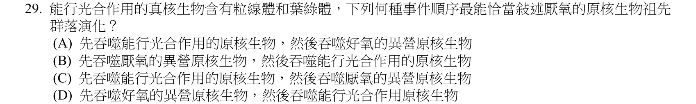
本地原卷PDF5 · 官方原答案PDF1（生物50題） · 已核對同年生物釋疑PDF4（未列本題）
官方採計：D 原答案：D
未列本輪取得的111年度生物釋疑PDF4；依同年答案，不宣稱沒有其他未取得公告
主分類：Ch06 A Tour of the Cell
6.5 / The Evolutionary Origins of Mitochondria and Chloroplasts
目錄行362；條目起始印刷頁109；實際目錄 PDF36
次分類：Ch28 Protists
28.1 / Endosymbiosis in Eukaryotic Evolution
目錄行1794；條目起始印刷頁594；實際目錄 PDF42
主分類理由：6.5 / The Evolutionary Origins of Mitochondria and Chloroplasts：109–110頁粒線體及葉綠體演化起源直接說明先後內共生。
次分類理由：28.1 / Endosymbiosis in Eukaryotic Evolution：594–595頁真核演化中的內共生進一步提供好氧細菌先、光合細菌後的支系脈絡。
科學說明：官方D。粒線體源於可利用氧的異營細菌共生，光合真核支系後來取得質體。並非所有真核支系都接續取得葉綠體；533–534頁作早期真核出現的背景，不另冒造新目。
來源涵蓋範圍：以本地Campbell實際目錄及列示正文作分類依據，原題限定與同年釋疑另存；不將正文小標冒充目錄條目。
教材正文：印刷109／PDF158、印刷110／PDF159、印刷533／PDF582、印刷534／PDF583、印刷594／PDF643、印刷595／PDF644
補充來源：本題未另列課本外來源
另行比較：先好氧內共生是否意味所有真核都取得葉綠體？
109與595頁確認粒線體先於質體的譜系順序，限定光合真核來源，保留兩章最小定位。
結論：證據確認，分類疑義已解決。完整覆核紀錄
Q30 · 54.1 / Competition 正式分類
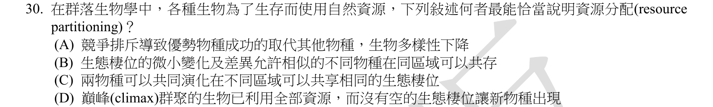
本地原卷PDF5 · 官方原答案PDF1（生物50題） · 已核對同年生物釋疑PDF4（未列本題）
官方採計：B 原答案：B
未列本輪取得的111年度生物釋疑PDF4；依同年答案，不宣稱沒有其他未取得公告
主分類：Ch54 Community Ecology
54.1 / Competition
目錄行3598；條目起始印刷頁1215；實際目錄 PDF50
主分類理由：54.1 / Competition：1215–1216頁競爭項下的資源分配說明相似種因生態位差異而共存。
次分類理由：無另列最小次條目；同域共存的生態位差異才是B，1215頁Competition下正文已有resource partitioning，無需自創目錄子目。
科學說明：官方B。資源使用時間、空間或種類有差異可減少競爭，屬resource partitioning。競爭排除不是共存機制，亦無證據支持巔峰群聚把所有可能生態位占滿。
來源涵蓋範圍：以本地Campbell實際目錄及列示正文作分類依據，原題限定與同年釋疑另存；不將正文小標冒充目錄條目。
教材正文：印刷1215／PDF1264、印刷1216／PDF1265
補充來源：本題未另列課本外來源
另行比較：資源分配是否應選競爭排除？
同域共存的生態位差異才是B，1215頁Competition下正文已有resource partitioning，無需自創目錄子目。
結論：證據確認，分類疑義已解決。完整覆核紀錄
Q31 · 22.3 / Homology 正式分類
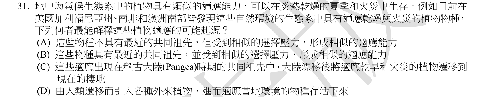
本地原卷PDF5 · 官方原答案PDF1（生物50題） · 已核對同年生物釋疑PDF4（未列本題）
官方採計：A 原答案：A
未列本輪取得的111年度生物釋疑PDF4；依同年答案，不宣稱沒有其他未取得公告
主分類：Ch22 Descent with Modification: A Darwinian View of Life
22.3 / Homology
目錄行1412；條目起始印刷頁479；實際目錄 PDF41
主分類理由：22.3 / Homology：479–481頁Homology項中的趨同演化對比，解釋相似選擇壓形成相似適應。
次分類理由：無另列最小次條目；481頁趨同對比與灌叢情境吻合A；Homology為真實最小目，正文convergence不冒列獨立目。
科學說明：官方A。1172–1174頁灌叢群系支持地中海型氣候、乾旱及火災情境；共同環境可造成趨同。選項沒有最近共同祖先須理解成非近緣共有性狀的直接來源，不能說這些植物完全沒有共同祖先。
來源涵蓋範圍：以本地Campbell實際目錄及列示正文作分類依據，原題限定與同年釋疑另存；不將正文小標冒充目錄條目。
教材正文：印刷479／PDF528、印刷480／PDF529、印刷481／PDF530、印刷1172／PDF1221、印刷1173／PDF1222、印刷1174／PDF1223
補充來源：本題未另列課本外來源
另行比較：相似適應是否一定來自最近共同祖先？
481頁趨同對比與灌叢情境吻合A；Homology為真實最小目，正文convergence不冒列獨立目。
結論：證據確認，分類疑義已解決。完整覆核紀錄
Q32 · 54.1 / Competition 正式分類
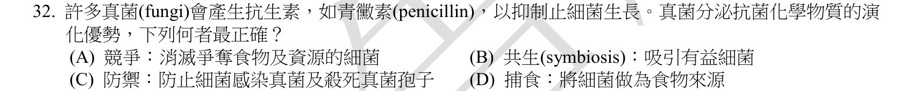
本地原卷PDF5 · 官方原答案PDF1（生物50題） · 已核對同年生物釋疑PDF4（未列本題）
官方採計：A 原答案：A
未列本輪取得的111年度生物釋疑PDF4；依同年答案，不宣稱沒有其他未取得公告
主分類：Ch54 Community Ecology
54.1 / Competition
目錄行3598；條目起始印刷頁1215；實際目錄 PDF50
次分類：Ch31 Fungi
31.5 / Practical Uses of Fungi
目錄行2024；條目起始印刷頁670；實際目錄 PDF43
主分類理由：54.1 / Competition：1215–1216頁種間競爭提供抗菌物質減少資源競爭者的生態解釋。
次分類理由：31.5 / Practical Uses of Fungi：670頁真菌實用價值明列青黴素，補足專名及產物。
科學說明：官方A。在本題框架下真菌抑制細菌可減少共同資源競爭；不是以細菌作食物或必為互利共生。不能從單題推成所有真菌抗生素只有此一生態功能。
來源涵蓋範圍：以本地Campbell實際目錄及列示正文作分類依據，原題限定與同年釋疑另存；不將正文小標冒充目錄條目。
教材正文：印刷670／PDF719、印刷1215／PDF1264、印刷1216／PDF1265
補充來源：本題未另列課本外來源
另行比較：抗生素是否為捕食細菌？
資源競爭是所問演化優勢，54.1主；31.5青黴素事例為次，沒有由藥用名稱改歸人體醫療。
結論：證據確認，分類疑義已解決。完整覆核紀錄
Q33 · 39.3 / The Effect of Light on the Biological Clock 正式分類
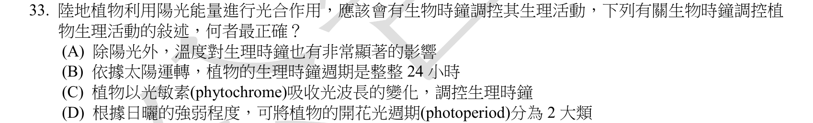
本地原卷PDF5 · 官方原答案PDF1（生物50題） · 已核對同年生物釋疑PDF4（未列本題）
官方採計：C 原答案：C
未列本輪取得的111年度生物釋疑PDF4；依同年答案，不宣稱沒有其他未取得公告
主分類：Ch39 Plant Responses to Internal and External Signals
39.3 / The Effect of Light on the Biological Clock
目錄行2573；條目起始印刷頁858；實際目錄 PDF45
次分類：Ch39 Plant Responses to Internal and External Signals
39.3 / Biological Clocks and Circadian Rhythms
目錄行2570；條目起始印刷頁857；實際目錄 PDF45
主分類理由：39.3 / The Effect of Light on the Biological Clock：858–859頁光對生物鐘的作用直接描述光敏素校準晝夜節律。
次分類理由：39.3 / Biological Clocks and Circadian Rhythms：857–858頁自由運行的生理節律補充約24小時及溫度補償。
科學說明：官方C。光訊號可校準內生時鐘；自由運行並非恰好24小時。溫度補償不代表絕對不受溫度影響，光週期主要是晝夜長度，不是光強弱，且非只有兩類反應。
來源涵蓋範圍：以本地Campbell實際目錄及列示正文作分類依據，原題限定與同年釋疑另存；不將正文小標冒充目錄條目。
教材正文：印刷857／PDF906、印刷858／PDF907、印刷859／PDF908
補充來源：本題未另列課本外來源
另行比較：時鐘是否恰好24h、完全不受溫度影響？
自由運行與光校準分開，主Effect of Light、次Biological Clocks；C可支持而不強化A的絕對程度。
結論：證據確認，分類疑義已解決。完整覆核紀錄
Q34 · 55.2 / Primary Production in Aquatic Ecosystems 正式分類
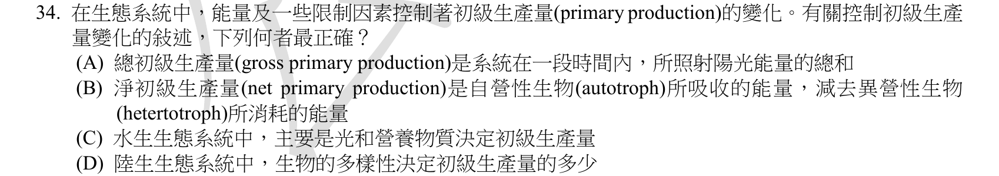
本地原卷PDF5 · 官方原答案PDF1（生物50題） · 已核對同年生物釋疑PDF4（未列本題）
官方採計：C 原答案：C
未列本輪取得的111年度生物釋疑PDF4；依同年答案，不宣稱沒有其他未取得公告
主分類：Ch55 Ecosystems and Restoration Ecology
55.2 / Primary Production in Aquatic Ecosystems
目錄行3689；條目起始印刷頁1242；實際目錄 PDF50
次分類：Ch55 Ecosystems and Restoration Ecology
55.2 / Ecosystem Energy Budgets
目錄行3686；條目起始印刷頁1241；實際目錄 PDF50
次分類：Ch55 Ecosystems and Restoration Ecology
55.2 / Primary Production in Terrestrial Ecosystems
目錄行3692；條目起始印刷頁1243；實際目錄 PDF50
主分類理由：55.2 / Primary Production in Aquatic Ecosystems：1242–1243頁水生初級生產量明列光與營養物限制，直接對應C。
次分類理由：55.2 / Ecosystem Energy Budgets：1241–1242頁生態系能量預算區分GPP、NPP及NEP；55.2 / Primary Production in Terrestrial Ecosystems：1243–1245頁陸域初級生產量補足水、溫度及養分限制。
科學說明：官方C。GPP是固定的化學能，不是全部入射光；NPP=GPP−自營呼吸，不能減成異營消耗。陸域生物多樣性有影響但非單一決定因素。
來源涵蓋範圍：以本地Campbell實際目錄及列示正文作分類依據，原題限定與同年釋疑另存；不將正文小標冒充目錄條目。
教材正文：印刷1241／PDF1290、印刷1242／PDF1291、印刷1243／PDF1292、印刷1244／PDF1293、印刷1245／PDF1294
補充來源：本題未另列課本外來源
另行比較：GPP／NPP與陸水限制是否混淆？
C光與營養直接成立；三個55.2最小項分開保存，GPP固定量與入射量、NPP與NEP區別明列。
結論：證據確認，分類疑義已解決。完整覆核紀錄
Q35 · 50.3 / The Vertebrate Visual System 正式分類
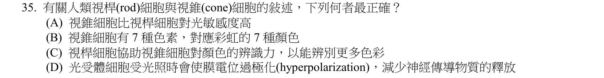
本地原卷PDF5 · 官方原答案PDF1（生物50題） · 已核對同年生物釋疑PDF4（未列本題）
官方採計：D 原答案：D
未列本輪取得的111年度生物釋疑PDF4；依同年答案，不宣稱沒有其他未取得公告
主分類：Ch50 Sensory and Motor Mechanisms
50.3 / The Vertebrate Visual System
目錄行3364；條目起始印刷頁1119；實際目錄 PDF49
主分類理由：50.3 / The Vertebrate Visual System：1119–1123頁脊椎動物視覺系統含桿錐細胞與光轉導。
次分類理由：無另列最小次條目；讀回感光訊號圖，光引起超極化和少釋放決定D；三類錐與桿低光敏感作反例，同一視覺最小目已足。
科學說明：官方D。光使感光細胞超極化並減少傳遞物質釋放；桿細胞弱光較敏感，人通常有三類錐細胞。桿細胞不以增加錐色素種類來辨別更多顏色。
來源涵蓋範圍：以本地Campbell實際目錄及列示正文作分類依據，原題限定與同年釋疑另存；不將正文小標冒充目錄條目。
教材正文：印刷1119／PDF1168、印刷1120／PDF1169、印刷1121／PDF1170、印刷1122／PDF1171、印刷1123／PDF1172
補充來源：本題未另列課本外來源
另行比較：桿錐感光是否產生去極化？
讀回感光訊號圖，光引起超極化和少釋放決定D；三類錐與桿低光敏感作反例，同一視覺最小目已足。
結論：證據確認，分類疑義已解決。完整覆核紀錄
Q36 · 15.2 / Inheritance of X-Linked Genes 正式分類
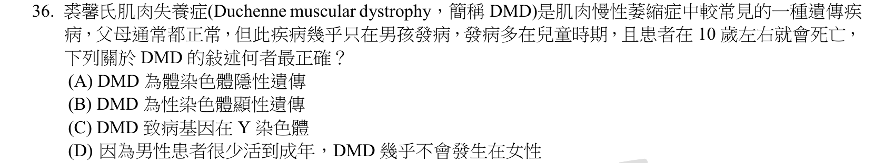
本地原卷PDF6 · 官方原答案PDF1（生物50題） · 同年釋疑PDF4
官方採計：D 原答案：D
111年度釋疑維持D
主分類：Ch15 The Chromosomal Basis of Inheritance
15.2 / Inheritance of X-Linked Genes
目錄行945；條目起始印刷頁299；實際目錄 PDF39
次分類：Ch15 The Chromosomal Basis of Inheritance
15.2 / X Inactivation in Female Mammals
目錄行948；條目起始印刷頁300；實際目錄 PDF39
主分類理由：15.2 / Inheritance of X-Linked Genes：299頁X聯基因遺傳直接列DMD及男性較常發病的原因。
次分類理由：15.2 / X Inactivation in Female Mammals：300頁女性X失活提供異合子細胞鑲嵌的補充背景。
科學說明：官方D且111釋疑PDF4維持。科學上DMD主要為X聯隱性；原題約10歲死亡與教材299頁約mid-20s不同，兩者均不當作個別患者固定壽命。官方女性須病父與帶因母是簡化雙突變模型；MedlinePlus也記女性帶因者偶有肌無力、痙攣或心肌病，故不能把男性少活成年當女性幾乎不發病的唯一完整原因。
來源涵蓋範圍：教材支援分類原理，未直接涵蓋的專名與細節由同年釋疑／具名補充來源補足；實讀範圍與下載限制見來源紀錄。
教材正文：印刷299／PDF348、印刷300／PDF349
補充來源：S03
另行比較：是否用科學疑慮改官方答案或隱藏問題？
同年答案與釋疑都維持D；299頁X聯DMD、300頁X失活與女性帶因表現補充解決分類，原題10歲及官方解釋限制照存。
結論：證據確認，分類疑義已解決。完整覆核紀錄
Q37 · 44.5 / Homeostatic Regulation of the Kidney 正式分類
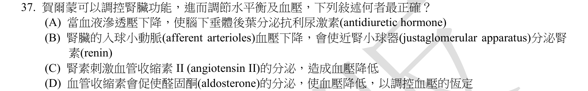
本地原卷PDF6 · 官方原答案PDF1（生物50題） · 已核對同年生物釋疑PDF4（未列本題）
官方採計：B 原答案：B
未列本輪取得的111年度生物釋疑PDF4；依同年答案，不宣稱沒有其他未取得公告
主分類：Ch44 Osmoregulation and Excretion
44.5 / Homeostatic Regulation of the Kidney
目錄行2987；條目起始印刷頁994；實際目錄 PDF47
主分類理由：44.5 / Homeostatic Regulation of the Kidney：994–996頁腎臟恆定調節直接涵蓋JGA、renin、RAAS與ADH。
次分類理由：無另列最小次條目；JGA因壓低釋放renin是B；其餘選項下降方向不符RAAS／滲透壓機制，腎臟恆定最小目涵蓋。
科學說明：官方B。入球小動脈壓力下降可促進近腎小球器釋放腎素；RAAS一般提升血壓，非降低。腎素是啟動血管張力素生成級聯的酵素，非直接分泌血管張力素II；ADH主要受血漿滲透壓升高等刺激。
來源涵蓋範圍：以本地Campbell實際目錄及列示正文作分類依據，原題限定與同年釋疑另存；不將正文小標冒充目錄條目。
教材正文：印刷994／PDF1043、印刷995／PDF1044、印刷996／PDF1045
補充來源：本題未另列課本外來源
另行比較：renin、angiotensinII、ADH的刺激及效果是否顛倒？
JGA因壓低釋放renin是B；其餘選項下降方向不符RAAS／滲透壓機制，腎臟恆定最小目涵蓋。
結論：證據確認，分類疑義已解決。完整覆核紀錄
Q38 · 34.2 / Derived Characters of Vertebrates 正式分類
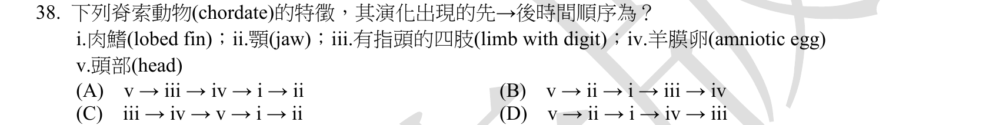
本地原卷PDF6 · 官方原答案PDF1（生物50題） · 已核對同年生物釋疑PDF4（未列本題）
官方採計：B 原答案：B
未列本輪取得的111年度生物釋疑PDF4；依同年答案，不宣稱沒有其他未取得公告
主分類：Ch34 The Origin and Evolution of Vertebrates
34.2 / Derived Characters of Vertebrates
目錄行2170；條目起始印刷頁722；實際目錄 PDF44
次分類：Ch34 The Origin and Evolution of Vertebrates
34.3 / Derived Characters of Gnathostomes
目錄行2183；條目起始印刷頁725；實際目錄 PDF44
次分類：Ch34 The Origin and Evolution of Vertebrates
34.3 / Ray-Finned Fishes and Lobe-Fins
目錄行2192；條目起始印刷頁728；實際目錄 PDF44
次分類：Ch34 The Origin and Evolution of Vertebrates
34.4 / Derived Characters of Tetrapods
目錄行2199；條目起始印刷頁730；實際目錄 PDF44
次分類：Ch34 The Origin and Evolution of Vertebrates
34.5 / Derived Characters of Amniotes
目錄行2212；條目起始印刷頁734；實際目錄 PDF44
主分類理由：34.2 / Derived Characters of Vertebrates：722–723頁脊椎動物衍徵描述頭部感覺結構，作五步先後的首個最小定位。
次分類理由：34.3 / Derived Characters of Gnathostomes：725頁有顎類定位顎；34.3 / Ray-Finned Fishes and Lobe-Fins：729頁肉鰭支系定位肉鰭；34.4 / Derived Characters of Tetrapods：730頁四足類定位具趾四肢；34.5 / Derived Characters of Amniotes：734–735頁羊膜動物定位羊膜卵。
科學說明：官方B：v頭→ii顎→i肉鰭→iii有趾四肢→iv羊膜卵。719頁支系圖與各節正文共同核對，不把章級樹圖或正文head字眼另造目錄項；同章四個次條目全保留。
來源涵蓋範圍：以本地Campbell實際目錄及列示正文作分類依據，原題限定與同年釋疑另存；不將正文小標冒充目錄條目。
教材正文：印刷719／PDF768、印刷720／PDF769、印刷722／PDF771、印刷723／PDF772、印刷725／PDF774、印刷729／PDF778、印刷730／PDF779、印刷734／PDF783、印刷735／PDF784
補充來源：本題未另列課本外來源
另行比較：跨五個衍徵是否只寫一般演化樹？
原卷v→ii→i→iii→iv與719圖及各小目一致；主首特徵、四同章次項，未因統計去重刪次目。
結論：證據確認，分類疑義已解決。完整覆核紀錄
Q39 · 20.2 / Analyzing Gene Expression 正式分類
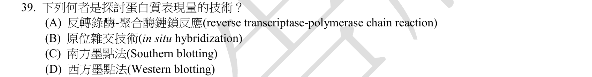
本地原卷PDF6 · 官方原答案PDF1（生物50題） · 已核對同年生物釋疑PDF4（未列本題）
官方採計：D 原答案：D
未列本輪取得的111年度生物釋疑PDF4；依同年答案，不宣稱沒有其他未取得公告
主分類：Ch20 DNA Tools and Biotechnology
20.2 / Analyzing Gene Expression
目錄行1251；條目起始印刷頁423；實際目錄 PDF40
主分類理由：20.2 / Analyzing Gene Expression：423–426頁分析基因表達是比較各種表達檢測工具的真實最小條目。
次分類理由：無另列最小次條目；NHGRI實讀確認Western抗體辨認蛋白及相對豐度；本地目錄只Analyzing Gene Expression，兩來源責任分清。
科學說明：官方D。Western blot用抗體偵測特定蛋白，可比較相對豐度；RT-PCR、原位核酸雜交及Southern各有核酸測量對象，不能直接等同蛋白量。本地該項以RNA方法為主，Western操作及定量限制以NHGRI補足，不冒稱教材有Western子目。
來源涵蓋範圍：教材支援分類原理，未直接涵蓋的專名與細節由同年釋疑／具名補充來源補足；實讀範圍與下載限制見來源紀錄。
教材正文：印刷423／PDF472、印刷424／PDF473、印刷425／PDF474、印刷426／PDF475
補充來源：S04
另行比較：RNA表達是否足以宣稱蛋白質表達量？
NHGRI實讀確認Western抗體辨認蛋白及相對豐度；本地目錄只Analyzing Gene Expression，兩來源責任分清。
結論：證據確認，分類疑義已解決。完整覆核紀錄
Q40 · 16.2 / DNA Replication: A Closer Look 正式分類
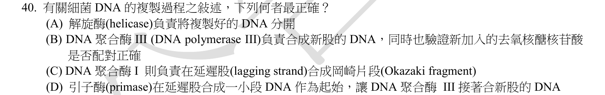
本地原卷PDF6 · 官方原答案PDF1（生物50題） · 已核對同年生物釋疑PDF4（未列本題）
官方採計：B 原答案：B
未列本輪取得的111年度生物釋疑PDF4；依同年答案，不宣稱沒有其他未取得公告
主分類：Ch16 The Molecular Basis of Inheritance
16.2 / DNA Replication: A Closer Look
目錄行1010；條目起始印刷頁322；實際目錄 PDF39
次分類：Ch16 The Molecular Basis of Inheritance
16.2 / Proofreading and Repairing DNA
目錄行1013；條目起始印刷頁327；實際目錄 PDF39
主分類理由：16.2 / DNA Replication: A Closer Look：322–327頁DNA複製詳論區分細菌聚合酶III、I、引子酶及解旋酶。
次分類理由：16.2 / Proofreading and Repairing DNA：327頁校對修復直接支持聚合酶檢查新加核苷酸。
科學說明：官方B。DNA pol III延伸新股並校對，pol I移除RNA引子及補DNA；引子酶做RNA，不是DNA。解旋酶分開親代雙股模板，不是負責已複製完DNA的最終解纏。
來源涵蓋範圍：以本地Campbell實際目錄及列示正文作分類依據，原題限定與同年釋疑另存；不將正文小標冒充目錄條目。
教材正文：印刷322／PDF371、印刷323／PDF372、印刷324／PDF373、印刷325／PDF374、印刷326／PDF375、印刷327／PDF376
補充來源：本題未另列課本外來源
另行比較：DNA polI與III合成及校對角色是否顛倒？
聚合酶III延伸加校對支持B；複製詳論與校對修復同章主次照存，不把RNA引子叫DNA。
結論：證據確認，分類疑義已解決。完整覆核紀錄
Q41 · 28.3 / Alveolates 正式分類
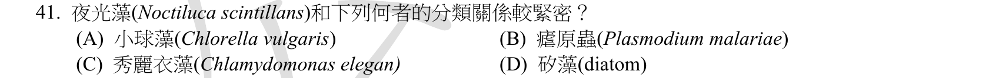
本地原卷PDF6 · 官方原答案PDF1（生物50題） · 已核對同年生物釋疑PDF4（未列本題）
官方採計：B 原答案：B
未列本輪取得的111年度生物釋疑PDF4；依同年答案，不宣稱沒有其他未取得公告
主分類：Ch28 Protists
28.3 / Alveolates
目錄行1817；條目起始印刷頁604；實際目錄 PDF42
主分類理由：28.3 / Alveolates：604–606頁囊泡蟲含渦鞭毛蟲與頂複蟲，可比較夜光藻和瘧原蟲親緣。
次分類理由：無另列最小次條目；Noctiluca與Plasmodium同Alveolata，較SAR內Stramenopiles近；NCBI與原研究題名支持渦鞭毛身份，不依發光或藻名猜測。
科學說明：官方B。補充分類紀錄及原研究題名／摘要確認Noctiluca為渦鞭毛蟲；與Plasmodium同屬Alveolata。矽藻屬Stramenopiles，綠藻是別支；共同為藻類外觀或都在SAR不表示最近。原卷Chlamydomonas elegan拼寫保留。
來源涵蓋範圍：教材支援分類原理，未直接涵蓋的專名與細節由同年釋疑／具名補充來源補足；實讀範圍與下載限制見來源紀錄。
教材正文：印刷594／PDF643、印刷595／PDF644、印刷601／PDF650、印刷602／PDF651、印刷604／PDF653、印刷605／PDF654、印刷606／PDF655
補充來源：S05
另行比較：同屬SAR是否使矽藻與瘧原蟲同樣近？
Noctiluca與Plasmodium同Alveolata，較SAR內Stramenopiles近；NCBI與原研究題名支持渦鞭毛身份，不依發光或藻名猜測。
結論：證據確認，分類疑義已解決。完整覆核紀錄
Q42 · 39.2 / A Survey of Plant Hormones 正式分類
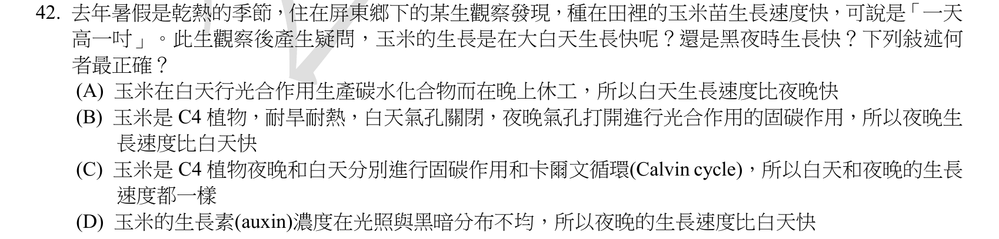
本地原卷PDF6 · 官方原答案PDF1（生物50題） · 已核對同年生物釋疑PDF4（未列本題）
官方採計：D 原答案：D
未列本輪取得的111年度生物釋疑PDF4；依同年答案，不宣稱沒有其他未取得公告
主分類：Ch39 Plant Responses to Internal and External Signals
39.2 / A Survey of Plant Hormones
目錄行2557；條目起始印刷頁847；實際目錄 PDF45
次分類：Ch10 Photosynthesis
10.5 / C4 Plants
目錄行676；條目起始印刷頁203；實際目錄 PDF37
次分類：Ch10 Photosynthesis
10.5 / CAM Plants
目錄行679；條目起始印刷頁205；實際目錄 PDF37
次分類：Ch39 Plant Responses to Internal and External Signals
39.3 / Biological Clocks and Circadian Rhythms
目錄行2570；條目起始印刷頁857；實際目錄 PDF45
主分類理由：39.2 / A Survey of Plant Hormones：847–849頁植物激素綜覽的生長素與向光性對應官方D的出題機制。
次分類理由：10.5 / C4 Plants：203–204頁C4植物辨別玉米空間分工；10.5 / CAM Plants：205頁CAM植物辨別夜間固碳時間分工；39.3 / Biological Clocks and Circadian Rhythms：857–858頁內生晝夜節律補足日夜生長不能單由光合作用推定。
科學說明：官方D。A錯把夜間當不生長，B、C混淆C4與CAM；但D以光側暗側生長素分布推成全株夜間必較快，證據不足。Tang與Boyer研究特定玉米第5葉，在25°C日／20°C夜可日快夜慢，亦受水分張力限制；不能當屏東田間莖長的直接實測，也不能據此改官方採計。
來源涵蓋範圍：教材支援分類原理，未直接涵蓋的專名與細節由同年釋疑／具名補充來源補足；實讀範圍與下載限制見來源紀錄。
教材正文：印刷203／PDF252、印刷204／PDF253、印刷205／PDF254、印刷847／PDF896、印刷848／PDF897、印刷849／PDF898、印刷857／PDF906、印刷858／PDF907
補充來源：S06
另行比較：向光性的不對稱生長能否證明全株夜間必快？
不能；D官方採計與不足推論分存。C4/CAM及時鐘次項均保留，特定第5葉研究僅作普遍化反例而非屏東田間證明。
結論：證據確認，分類疑義已解決。完整覆核紀錄
Q43 · 39.2 / A Survey of Plant Hormones 正式分類
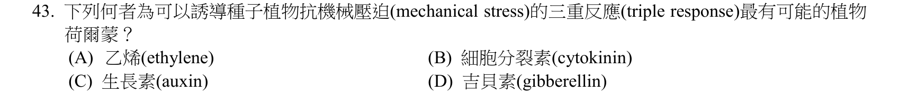
本地原卷PDF7 · 官方原答案PDF1（生物50題） · 已核對同年生物釋疑PDF4（未列本題）
官方採計：A 原答案：A
未列本輪取得的111年度生物釋疑PDF4；依同年答案，不宣稱沒有其他未取得公告
主分類：Ch39 Plant Responses to Internal and External Signals
39.2 / A Survey of Plant Hormones
目錄行2557；條目起始印刷頁847；實際目錄 PDF45
主分類理由：39.2 / A Survey of Plant Hormones：852–854頁激素綜覽中的乙烯三重反應直接回答機械阻力誘發的激素。
次分類理由：無另列最小次條目；三重反應是乙烯專例，852–854頁最小目仍是激素綜覽；非一般觸形態變化小目，A維持。
科學說明：官方A。乙烯引起伸長受抑、徑向增粗及水平生長以繞過障礙。三重反應具體列於乙烯段，不因題幹mechanical stress便誤歸39.4一般觸形態反應。
來源涵蓋範圍：以本地Campbell實際目錄及列示正文作分類依據，原題限定與同年釋疑另存；不將正文小標冒充目錄條目。
教材正文：印刷852／PDF901、印刷853／PDF902、印刷854／PDF903
補充來源：本題未另列課本外來源
另行比較：mechanical stress是否必須歸Mechanical Stimuli？
三重反應是乙烯專例，852–854頁最小目仍是激素綜覽；非一般觸形態變化小目，A維持。
結論：證據確認，分類疑義已解決。完整覆核紀錄
Q44 · 20.2 / Analyzing Gene Expression 正式分類
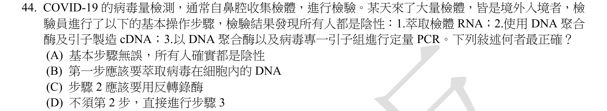
本地原卷PDF7 · 官方原答案PDF1（生物50題） · 同年釋疑PDF4
官方採計：C 原答案：C
111年度釋疑維持C
主分類：Ch20 DNA Tools and Biotechnology
20.2 / Analyzing Gene Expression
目錄行1251；條目起始印刷頁423；實際目錄 PDF40
次分類：Ch20 DNA Tools and Biotechnology
20.1 / Amplifying DNA: The Polymerase Chain Reaction (PCR) and Its Use in DNA Cloning
目錄行1241；條目起始印刷頁420；實際目錄 PDF40
主分類理由：20.2 / Analyzing Gene Expression：423–424頁分析表達中的RT-PCR先由RNA合成cDNA，直接診斷步驟2錯誤。
次分類理由：20.1 / Amplifying DNA: The Polymerase Chain Reaction (PCR) and Its Use in DNA Cloning：420–421頁PCR模板與擴增原理補足步驟3。
科學說明：官方C且111釋疑PDF4維持。RNA模板需要反轉錄酶先做cDNA；一般DNA依賴DNA聚合酶不能取代。反轉錄酶本身也是RNA依賴DNA聚合酶，故題文DNA聚合酶是未指定模板能力的簡寫。缺少適當陽性與內控時，全陰性不能證明所有人皆未感染。
來源涵蓋範圍：以本地Campbell實際目錄及列示正文作分類依據，原題限定與同年釋疑另存；不將正文小標冒充目錄條目。
教材正文：印刷420／PDF469、印刷421／PDF470、印刷423／PDF472、印刷424／PDF473
補充來源：本題未另列課本外來源
另行比較：反轉錄酶本身也是DNA聚合酶是否造成歧義？
保留模板依賴能力的用語限制；同年C維持，RT-PCR主、PCR次，負批次不能跳過程序控制而說全為真陰性。
結論：證據確認，分類疑義已解決。完整覆核紀錄
Q45 · 14.4 / Dominantly Inherited Disorders 正式分類
本地原卷PDF7 · 官方原答案PDF1（生物50題） · 已核對同年生物釋疑PDF4（未列本題）
官方採計：A 原答案：A
未列本輪取得的111年度生物釋疑PDF4；依同年答案，不宣稱沒有其他未取得公告
主分類：Ch14 Mendel and the Gene Idea
14.4 / Dominantly Inherited Disorders
目錄行914；條目起始印刷頁287；實際目錄 PDF38
主分類理由：14.4 / Dominantly Inherited Disorders：287–288頁顯性遺傳疾病直接以亨丁頓舞蹈症說明顯性致病等位基因。
次分類理由：無另列最小次條目；臨床與分子層級分開；287頁亨丁頓是直接顯性病例，其他臨床典型隱性表型未因此改答案。
科學說明：官方A。地中海型貧血、囊狀纖維化與鐮狀細胞貧血的典型臨床重症常用隱性模式描述；不能把鐮狀血紅素分子層次的共顯性與題問臨床疾病混淆。285–286頁作隱性病比較。
來源涵蓋範圍：以本地Campbell實際目錄及列示正文作分類依據，原題限定與同年釋疑另存；不將正文小標冒充目錄條目。
教材正文：印刷285／PDF334、印刷286／PDF335、印刷287／PDF336、印刷288／PDF337
補充來源：本題未另列課本外來源
另行比較：鐮狀細胞病的共顯性會改變顯性疾病選項嗎？
臨床與分子層級分開；287頁亨丁頓是直接顯性病例，其他臨床典型隱性表型未因此改答案。
結論：證據確認，分類疑義已解決。完整覆核紀錄
Q46 · 34.5 / Reptiles 正式分類
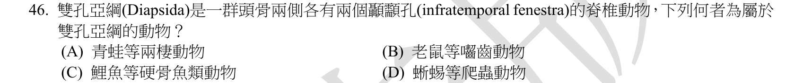
本地原卷PDF7 · 官方原答案PDF1（生物50題） · 已核對同年生物釋疑PDF4（未列本題）
官方採計：D 原答案：D
未列本輪取得的111年度生物釋疑PDF4；依同年答案，不宣稱沒有其他未取得公告
主分類：Ch34 The Origin and Evolution of Vertebrates
34.5 / Reptiles
目錄行2218；條目起始印刷頁735；實際目錄 PDF44
次分類：Ch34 The Origin and Evolution of Vertebrates
34.6 / Early Evolution of Mammals
目錄行2228；條目起始印刷頁741；實際目錄 PDF44
主分類理由：34.5 / Reptiles：735–738頁爬行類章目明列diapsid、鱗龍與蜥蜴。
次分類理由：34.6 / Early Evolution of Mammals：741頁哺乳類早期演化補充合弓類，排除老鼠。
科學說明：官方D。蜥蜴是雙孔支系；青蛙、鯉魚及老鼠不是。原題用infratemporal fenestra概稱每側兩孔不精確，下顳孔只是其中一種位置；教材以眼後每側一對孔描述。龜類後來失孔不表示被排除於雙孔支系。
來源涵蓋範圍：以本地Campbell實際目錄及列示正文作分類依據，原題限定與同年釋疑另存；不將正文小標冒充目錄條目。
教材正文：印刷735／PDF784、印刷736／PDF785、印刷737／PDF786、印刷738／PDF787、印刷741／PDF790
補充來源：本題未另列課本外來源
另行比較：兩孔是否都叫infratemporal、龜失孔是否排除？
736頁確認蜥蜴雙孔與龜支系，741頁合弓類排除鼠；原英文命名不精確照存，不將兩孔當同一位置。
結論：證據確認，分類疑義已解決。完整覆核紀錄
Q47 · 17.3 / Alteration of mRNA Ends 正式分類
本地原卷PDF7 · 官方原答案PDF1（生物50題） · 同年釋疑PDF4
官方採計：D 原答案：D
111年度釋疑維持D
主分類：Ch17 Gene Expression: From Gene to Protein
17.3 / Alteration of mRNA Ends
目錄行1059；條目起始印刷頁345；實際目錄 PDF39
主分類理由：17.3 / Alteration of mRNA Ends：345–346頁mRNA末端修飾直接記5′帽與輸出、穩定及核糖體結合。
次分類理由：無另列最小次條目；345頁概述與官方引用作者文第5頁外切方向比對，D核輸出成立；不把5′帽保護外切擴充為阻止所有內切。
科學說明：官方D且111釋疑PDF4維持。5′帽不在最後外顯子末端，不是DNA複製起始要件。教材的保護水解概述不可擴張成防止所有內切酶；同年引用Hocine等2010之作者PDF第5頁明指抵禦5′→3′外切降解，與C內切酶不同。
來源涵蓋範圍：教材支援分類原理，未直接涵蓋的專名與細節由同年釋疑／具名補充來源補足；實讀範圍與下載限制見來源紀錄。
教材正文：印刷345／PDF394、印刷346／PDF395
補充來源：S07
另行比較：保護mRNA降解是否足夠使內切酶選項也正確？
345頁概述與官方引用作者文第5頁外切方向比對，D核輸出成立；不把5′帽保護外切擴充為阻止所有內切。
結論：證據確認，分類疑義已解決。完整覆核紀錄
Q48 · 17.4 / Building a Polypeptide 正式分類
本地原卷PDF7 · 官方原答案PDF1（生物50題） · 已核對同年生物釋疑PDF4（未列本題）
官方採計：C 原答案：C
未列本輪取得的111年度生物釋疑PDF4；依同年答案，不宣稱沒有其他未取得公告
主分類：Ch17 Gene Expression: From Gene to Protein
17.4 / Building a Polypeptide
目錄行1072；條目起始印刷頁350；實際目錄 PDF39
主分類理由：17.4 / Building a Polypeptide：350–352頁多胜肽建立的起始階段直接對應核糖體辨識mRNA的序列。
次分類理由：無另列最小次條目；重看兩專名與Brown起始段，均協助轉譯起始，C；本地Building a Polypeptide最小項配補充，不捏造專名子項。
科學說明：官方C。Shine–Dalgarno在細菌以rRNA互補協助定位，Kozak是典型真核起始密碼附近的序列環境；兩者用於轉譯起始，非轉錄啟動子。專名細節由Brown Genomes章節補足，不虛構本地同名子目或宣稱所有mRNA皆遵循此一路徑。
來源涵蓋範圍：教材支援分類原理，未直接涵蓋的專名與細節由同年釋疑／具名補充來源補足；實讀範圍與下載限制見來源紀錄。
教材正文：印刷350／PDF399、印刷351／PDF400、印刷352／PDF401
補充來源：S08
另行比較：SD／Kozak是否可能是轉錄啟動子？
重看兩專名與Brown起始段，均協助轉譯起始，C；本地Building a Polypeptide最小項配補充，不捏造專名子項。
結論：證據確認，分類疑義已解決。完整覆核紀錄
Q49 · 16.2 / Proofreading and Repairing DNA 正式分類
本地原卷PDF7 · 官方原答案PDF1（生物50題） · 已核對同年生物釋疑PDF4（未列本題）
官方採計：A 原答案：A
未列本輪取得的111年度生物釋疑PDF4；依同年答案，不宣稱沒有其他未取得公告
主分類：Ch16 The Molecular Basis of Inheritance
16.2 / Proofreading and Repairing DNA
目錄行1013；條目起始印刷頁327；實際目錄 PDF39
主分類理由：16.2 / Proofreading and Repairing DNA：327–328頁校對與修復圖示切除受損DNA、補合成並由ligase封口。
次分類理由：無另列最小次條目；327頁切除填補封口支持ligase；糖基酶只特定起始路徑，與共同末端封口不同。原圖50分界完整。
科學說明：官方A。常規DNA切除式修復最後需連接酶恢復骨架連續。糖基酶是鹼基切除的起始辨識，不是所有切除路徑都相同；外切酶與反轉錄酶亦非共同必需的此末步。將所有限定於題目一般DNA修復情境。
來源涵蓋範圍：以本地Campbell實際目錄及列示正文作分類依據，原題限定與同年釋疑另存；不將正文小標冒充目錄條目。
教材正文：印刷327／PDF376、印刷328／PDF377
補充來源：本題未另列課本外來源
另行比較：所有切除修復是否都需glycosylase？
327頁切除填補封口支持ligase；糖基酶只特定起始路徑，與共同末端封口不同。原圖50分界完整。
結論：證據確認，分類疑義已解決。完整覆核紀錄
Q50 · 16.2 / Proofreading and Repairing DNA 正式分類
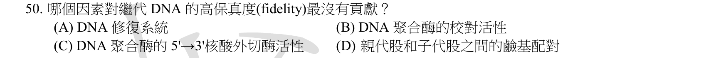
本地原卷PDF7 · 官方原答案PDF1（生物50題） · 已核對同年生物釋疑PDF4（未列本題）
官方採計：C 原答案：C
未列本輪取得的111年度生物釋疑PDF4；依同年答案，不宣稱沒有其他未取得公告
主分類：Ch16 The Molecular Basis of Inheritance
16.2 / Proofreading and Repairing DNA
目錄行1013；條目起始印刷頁327；實際目錄 PDF39
次分類：Ch16 The Molecular Basis of Inheritance
16.2 / DNA Replication: A Closer Look
目錄行1010；條目起始印刷頁322；實際目錄 PDF39
主分類理由：16.2 / Proofreading and Repairing DNA：327–328頁校對與修復區分配對選擇、聚合酶校對及事後修補對正確性的貢献。
次分類理由：16.2 / DNA Replication: A Closer Look：323–325頁複製詳論補足引子移除與股延伸，避免把核酸合成方向當校對方向。
科學說明：官方C。3′→5′外切活性可校對新股末端；5′→3′外切活性在典型DNA pol I用於去除RNA引子，非此直接校對機制。Campbell本頁未細寫外切方向，Cooper教材補足；最沒有貢獻是選項比較，不宣稱引子處理對整體複製品質完全無關。
來源涵蓋範圍：教材支援分類原理，未直接涵蓋的專名與細節由同年釋疑／具名補充來源補足；實讀範圍與下載限制見來源紀錄。
教材正文：印刷323／PDF372、印刷324／PDF373、印刷325／PDF374、印刷327／PDF376、印刷328／PDF377
補充來源：S09
另行比較：5′→3′核酸外切是否和3′→5′校對混同？
重新讀方向箭頭，C原答案與Cooper外切功能區分吻合；校對主、引子移除次，沒有聲稱合成5′→3′方向沒有貢獻。
結論：證據確認，分類疑義已解決。完整覆核紀錄
目前篩選沒有符合的題目；本年度總數仍為50題。
補充來源
查證日期：2026-09-10。使用原始研究摘要、官方資料與作者教材，不宣稱所有出版商全文已取得。詳細界線見來源紀錄。
- S01 Falk等1998，Metabolic Bypass of the Tricarboxylic Acid Cycle during Lipid Mobilization in Germinating Oilseeds
油菜儲油轉糖須繞過TCA放出CO2步驟，粒線體參與該代謝转換；配合Campbell112頁乙醛酸循環體，支援葉綠體非此題直接動員胞器。
實讀範圍：實讀網頁搜尋之摘要與相關段落片段；油菜研究不是蓖麻實驗。PMC原始下載是瀏覽器挑戰HTML，出版商只取得摘要頁，不聲稱完整論文逐頁讀過。
原始來源1 · 原始來源2 · 原始來源3 - S02 ICTV Report：Viroids
類病毒為環狀單股RNA、沒有蛋白殼、不編碼蛋白質；補本地教材未詳細說明的capsid差異。
實讀範圍：本輪下載並讀Characteristics與Genome相關正文，原HTML雜湊在下載紀錄。引用的是類病毒，不把需輔助病毒的衛星RNA概念混同。
原始來源1 - S03 NIH MedlinePlus Genetics：Duchenne and Becker muscular dystrophy
典型遺傳為X聯隱性；女性帶因者偶有肌肉症狀及心肌病風險，故女性不發病不是絕對法則。
實讀範圍：本輪下載並實讀Inheritance及女性帶因者段落。只處理考題遺傳敘述，不提供個人壽命估計或臨床診斷；299頁教材壽命敘述與題文另比對。
原始來源1 - S04 NHGRI Genetics Glossary：Western Blot
蛋白電泳分離後轉膜、用抗體辨認特定蛋白，可了解相對豐度及大小；支援選項D。
實讀範圍：本輪下載並實讀Definition與Narration，沒有宣稱未校正的條帶強度就是絕對蛋白量。
原始來源1 - S05 NCBI Taxonomy 2966及2007 Noctiluca系統研究
Noctiluca scintillans歸渦鞭毛蟲，屬Alveolata；再用Campbell604–606頁比較與Plasmodium及矽藻的支系。
實讀範圍：實讀NCBI分類頁Lineage與PubMed原研究題名及摘要開頭，未讀完整原研究；NCBI自述不取代正式命名文獻。WoRMS403失敗保留，不冒稱該網頁成功讀取。
原始來源1 · 原始來源2 · 原始來源3 - S06 Tang與Boyer2008，Xylem tension affects growth-induced water potential and daily elongation of maize leaves，J Exp Bot 59:753–764
玉米第5葉伸長受水分張力及溫度影響；25°C日／20°C夜的實驗可日快夜慢，不能單由向光性推論全株夜間必快。
實讀範圍：透過web讀出版商轉向內容的摘要、方法及日夜伸長相關結果；研究B73×Mo17第5葉，不是屏東莖長田間實測。直接下載遇憑證過期，未關閉TLS驗證，未虛構原PDF雜湊。
原始來源1 - S07 Hocine、Singer、Grünwald2010，RNA Processing and Export，doi:10.1101/cshperspect.a000752
5′加帽促進成熟mRNA功能；作者PDF第5頁說保護5′→3′外切降解，不能解釋成阻止所有內切酶。核輸出作用另由本地345頁及同年釋疑支持。
實讀範圍：官方111釋疑PDF4列此引用；本輪web解析讀作者PDF第4–5頁Capping及Consequences相關段落，不稱20頁全文視讀。直接原檔下載403，沒有本地PDF原始位元雜湊。
原始來源1 - S08 Brown，Genomes 2nd ed.：Synthesis and Processing of the Proteome
Shine–Dalgarno提供細菌核糖體定位，Kozak是典型真核起始密碼鄰近的辨識背景，兩者屬轉譯起始。
實讀範圍：本輪下載並實讀Initiation相關段與Kozak段；不把教科書列舉規則當全部物種／所有mRNA均無例外。
原始來源1 - S09 Cooper，The Cell 2nd ed.：DNA Replication
典型DNA pol I的5′→3′外切活性移除RNA引子，3′→5′外切活性則校對新股末端。
實讀範圍：本輪web實讀The Fidelity of Replication段落；補Campbell校對正文未明列的外切方向，不擴張為引子處理對複製完全無用。
原始來源1